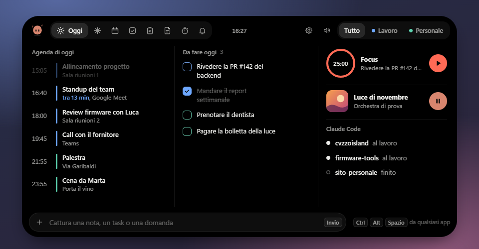
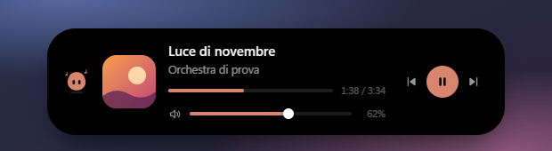
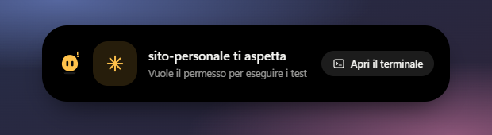
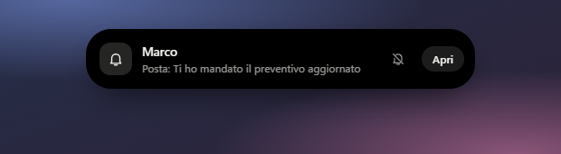
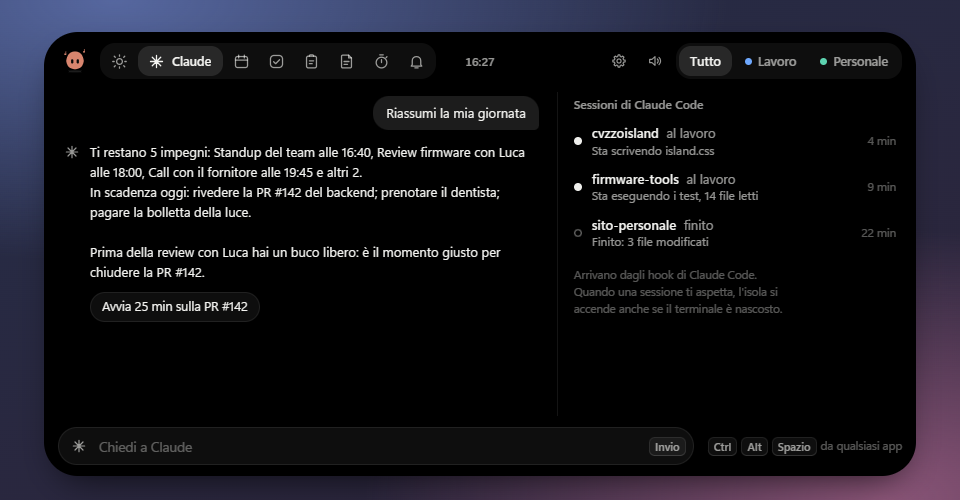
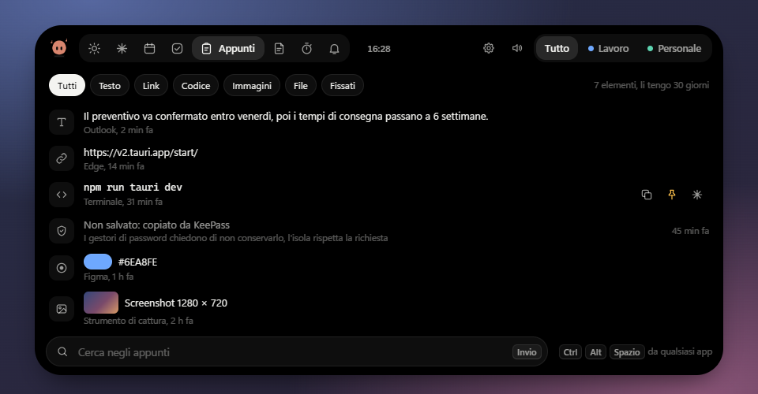
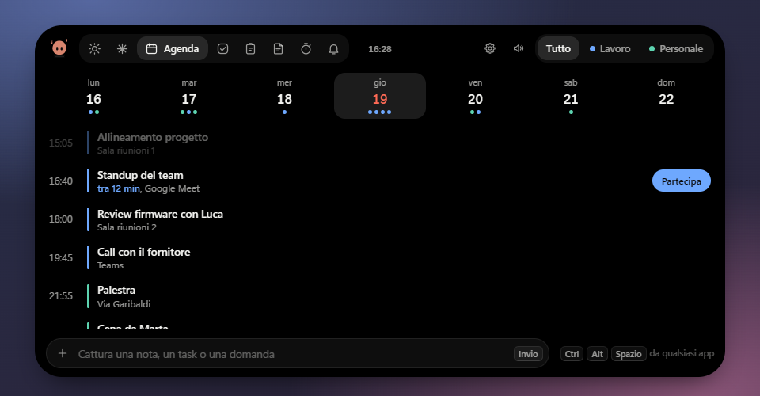
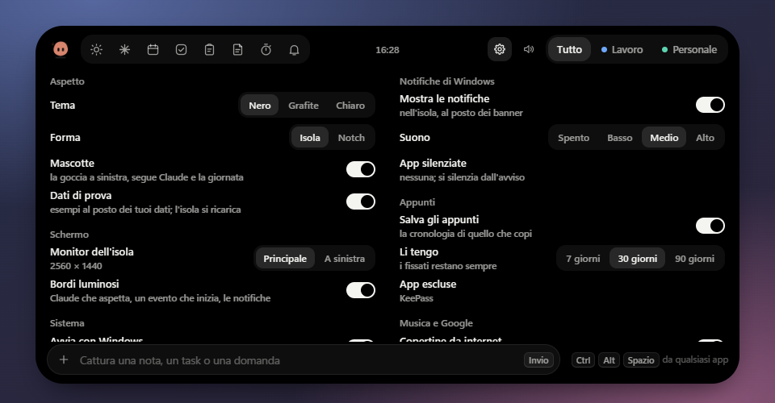

CvzzoIsland
Un'isola in alto al centro dello schermo di Windows. Mostra la giornata senza aprire niente: la prossima riunione, i task, il timer, la musica che suona, le notifiche, le sessioni di Claude Code.
Si installa per il tuo utente, senza permessi di amministratore, e si aggiorna da sola. Windows all'inizio mostra un avviso: ecco come si va avanti.

Chiusa, ti avvisa
Quando non la usi è una pillola nera in cima allo schermo. Si allarga per un momento quando serve: la musica che suona, Claude Code che aspetta una tua risposta, una notifica appena arrivata.



Aperta, tutta la giornata
- Agenda e task di Google Calendar e Google Tasks, divisi tra lavoro e personale. Li crea e li modifica quando glielo chiedi. Per ora Google funziona solo sul PC dell'autore: cosa serve.
- Cattura rapida da qualsiasi app con Ctrl Alt Spazio: una nota, un task, un evento o una domanda.
- Claude: domande sulla giornata, sugli appunti e sulle note; gli avvisi quando una sessione di Claude Code ha finito o aspetta.
- Appunti: la cronologia di quello che copi, cercabile, salvata solo sul PC. Quello che copi da un gestore di password non si salva.
- Timer e pomodoro, musica del lettore che suona, volume delle app e notifiche di Windows.








Nelle immagini ci sono dati di prova inventati.
Come si installa
- Scarica l'installer e aprilo. Windows mostra «Windows ha protetto il PC», perché l'installer non ha una firma digitale a pagamento. Clicca «Ulteriori informazioni» e poi «Esegui comunque».
- L'isola compare in alto al centro. Un clic la apre; Ctrl Alt Spazio apre la cattura rapida da qualsiasi app.
- Sistemala dall'ingranaggio: tema, monitor, notifiche, appunti, avvio con Windows.
Cosa serve
- Windows 11 a 64 bit. Su Windows 10 dovrebbe andare, ma non è provata.
- Google: per ora agenda e task di Google funzionano solo sul PC dell'autore. Senza Google i task si scrivono nell'isola e restano sul PC; l'agenda resta vuota.
- Claude: le domande passano da Claude Code, installato sul PC e collegato al tuo account Claude. Gli avvisi delle sessioni vogliono gli hook di Claude Code, per ora da impostare a mano.
- Note: se usi Obsidian finiscono nella cartella Inbox del vault aperto, altrimenti restano sul PC.
- Spotify: il cuore per salvare il brano funziona solo per gli account aggiunti a mano, perché su Spotify l'app è ancora in prova. Il resto della musica va con i lettori che compaiono nei controlli multimediali di Windows.
Novità
- 0.2.119/11/2026Dati di prova spenti all'inizio, piccole correzioni
- 0.2.019/11/2026Impostazioni nell'isola, aggiornamenti automatici
Domande
Come si aggiorna?
Da sola: controlla un minuto e mezzo dopo l'avvio e poi ogni 6 ore. Quando c'è una versione nuova lo dice, e la installa solo se clicchi «Installa». Si controlla anche a mano, dalle Impostazioni.
Dove restano i miei dati?
Sul PC: in %APPDATA%\CvzzoIsland, e gli accessi a Google e Spotify nel Gestore credenziali di Windows. Non c'è un server di CvzzoIsland. I dettagli sono nell'informativa sulla privacy.
Come si disinstalla?
Impostazioni di Windows, App, App installate, CvzzoIsland, Disinstalla. La cartella %APPDATA%\CvzzoIsland resta: cancellala a mano se non ti serve più.
Costa qualcosa?
No. È un progetto personale, senza pubblicità e senza account suoi.